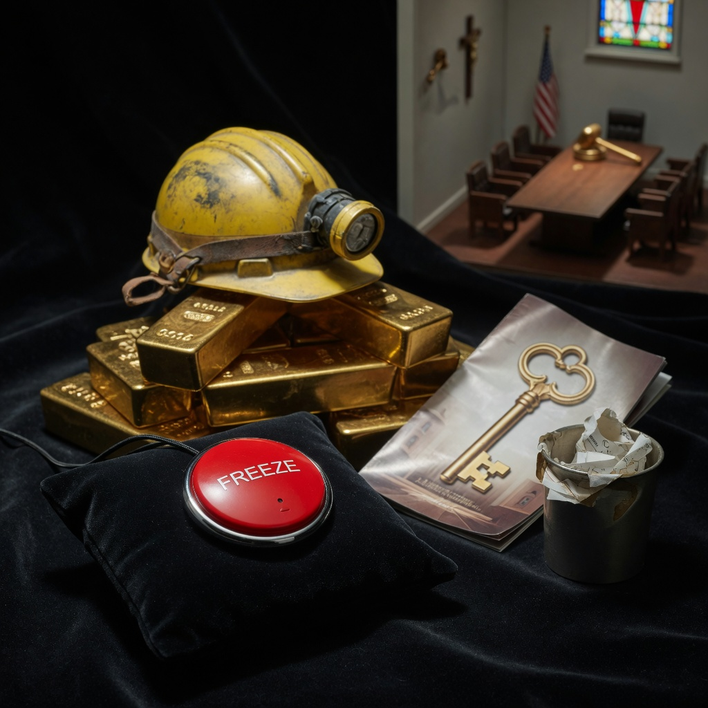

Satire · 15 seconds
Proof of work, a eulogy
They kept the vocabulary. They outsourced the work. Not Kaspa core. A clown desk funeral.
Proof of work was the insight: scarce money, no kings, a bill that cannot be vetoed by a committee with a nice office. Crypto offered that, then skipped the ethos like a groom who read the vows off a teleprompter and married the bank. They kept the vocabulary. They outsourced the work.
Decentralisation RSVP’d. Saw the diagram. Left. Stake is capital wearing a miner’s hat. Freeze is the product; keys are the brochure. The ledger is a notary for whatever Discord already decided. “Decentralise after PMF” is how you keep the franchise and still say the word. Slide 2 was proof of work. Lawyers, custodians, and kill-switch men ate slide 2 and called the leftovers a network.
